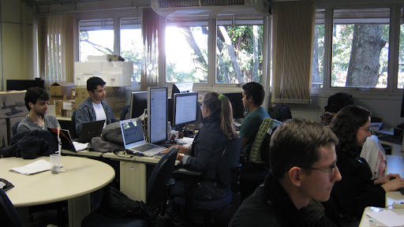
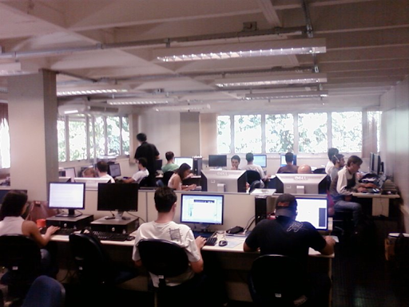
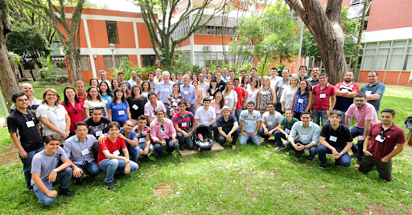
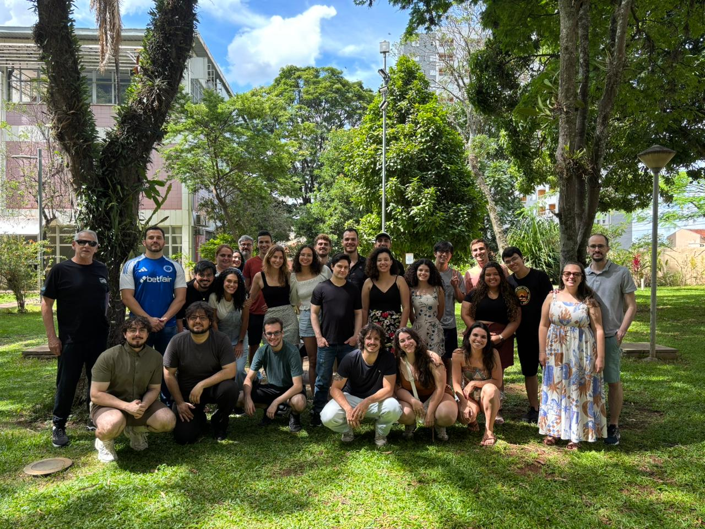
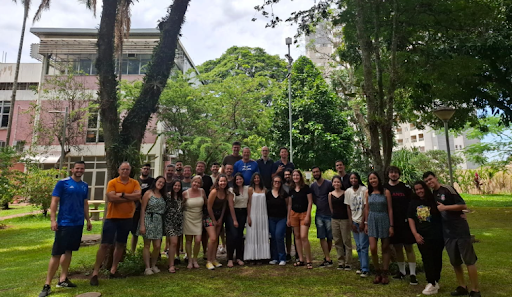
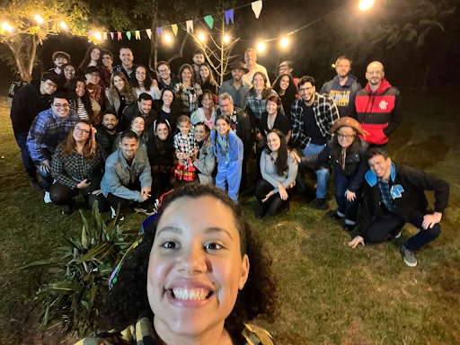
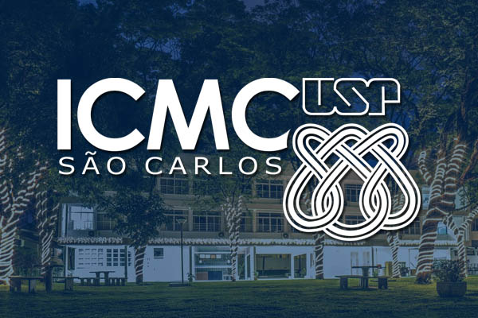

Participe do Laboratório de Engenharia de Software
O Laboratório de Engenharia de Software recebe estudantes interessados em aprofundar seus conhecimentos teóricos e práticos, por meio da participação em atividades de pesquisa, desenvolvimento e extensão.



Nossa História
Consolidação de um grupo dedicado à pesquisa e à formação em Engenharia de Software
O laboratório foi idealizado com o objetivo de consolidar-se como um grupo de excelência na realização de pesquisas associadas à área de Engenharia de Software. Sua criação contou com a iniciativa dos professores Fernão Rodrigues Germano, Paulo Cesar Masiero, José Carlos Maldonado e Rosely Sanches.
1976
Defesa da primeira dissertação de mestrado na área no ICMC, com o tema “Estudo de um Modelo para Descrição, Projeto e Análise da Dinâmica de Sistemas da Informação”, marcando o início das pesquisas em Engenharia de Software na instituição.
1993
Criação formal do laboratório, com o apoio e a contribuição do professor precursor no ICMC, Prof. Dr. Odelar Leite Linhares.
1996
Conclusão dos primeiros trabalhos de doutorado desenvolvidos no âmbito do laboratório, consolidando sua atuação na pós-graduação.
Dias Atuais
232 dissertações de mestrado concluídas
129 teses de doutorado defendidas
29 projetos de pós-doutorado realizados

Nossa Missão
Produzir, evoluir e disseminar conhecimento e inovação nas áreas de Matemática, Ciência da Computação e Estatística, formando recursos humanos em nível de graduação e pós-graduação e promovendo ações de inserção cultural e social.
Nossa Visão
Tornar-se uma referência nacional e internacional em ensino e pesquisa, contribuindo de forma decisiva para a evolução do conhecimento em suas áreas de atuação, formando recursos humanos de alto nível e apoiando o desenvolvimento científico, tecnológico e social.
Vida Estudantil
Integração acadêmica e colaboração no Labes
O Laboratório de Engenharia de Software promove um ambiente colaborativo de aprendizagem, reunindo estudantes que participam tanto de forma presencial quanto online. O espaço estimula a troca de experiências, o desenvolvimento técnico e o fortalecimento da comunidade acadêmica.


Atividades de Pesquisa
Participação ativa dos estudantes em projetos científicos, grupos de estudo e discussões técnicas relacionadas à Engenharia de Software.
Ambiente Colaborativo
Espaços compartilhados que incentivam o trabalho em equipe, a troca de conhecimento e o desenvolvimento acadêmico e profissional.

Integração Social
Atividades culturais e comemorativas que fortalecem os vínculos entre os membros do laboratório.
Alunos e Participação no Laboratório
Ao longo dos anos, o Laboratório de Engenharia de Software tem formado e acolhido estudantes de diferentes níveis e modalidades. Os números a seguir apresentam tanto o total de alunos que já passaram pelo laboratório quanto aqueles que participam ativamente das atividades no momento atual.
Concluídos
Mestrados
Doutorados
Pós Doutorados
Em Andamento
Iniciações Científicas
Mestrados
Doutorados
Pós Doutorados
Sobre o ICMC
O Instituto de Ciências Matemáticas e de Computação (ICMC) da Universidade de São Paulo (USP) é uma das mais importantes instituições brasileiras nas áreas de Ciência da Computação, Matemática, Matemática Aplicada e Estatística.
Nossa missão é produzir, desenvolver e disseminar conhecimento e inovação nas áreas de Matemática, Ciência da Computação e Estatística, formar recursos humanos em nível de graduação e pós-graduação e promover ações de inserção cultural e social. Essa missão se define pelo compromisso com a necessidade de evolução social, científica e tecnológica na região de São Carlos, no estado de São Paulo e no Brasil.
A visão do ICMC é tornar-se uma referência mundial em ensino e pesquisa, contribuindo decisivamente para a evolução do conhecimento em suas áreas de atuação, formando recursos humanos de alto nível e apoiando o desenvolvimento científico, tecnológico e social da região, do estado e do país.
